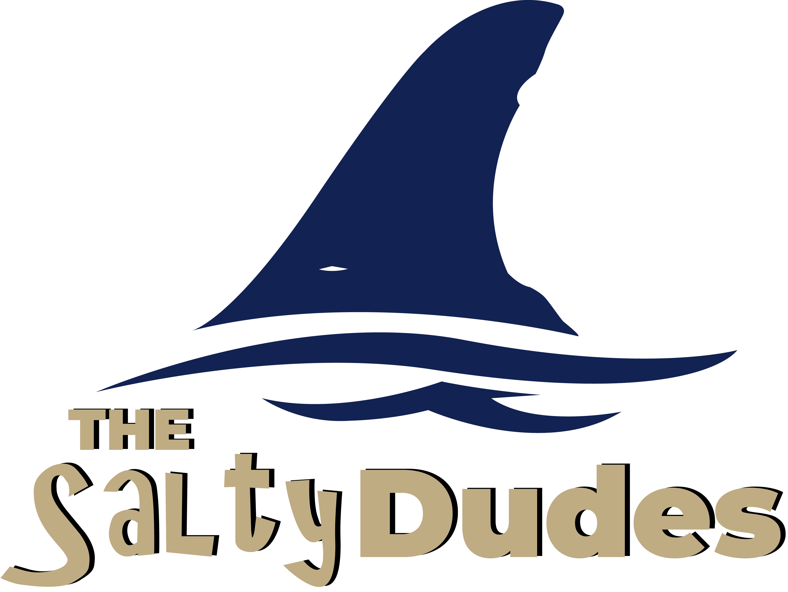

Hello, My name is Archi Gardner. I love being a UX Designer because of the challange of each project. When you have a goal, reasearch is done to find out how it compares to the goal. Then with the ressearch results the goal can be adjusted or stay the same. Building something that is backed by data is a solid and great way to accomplish something fun.
